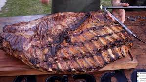

Asado

Description
Make the best Argentinian Asado Ever !!!
Prepare Argentine roast:
-
2 kg meat (a little strip roast, empty, roast lid, entrails, rump tail, steak, grill skirt or if you have a cut that you like, include it)
-
4 chocolate black puddings (if it's one of the big ones, you break it up when you serve it)
-
4 pork sausages
-
2 kidneys
-
2 kg chitterling
-
grill sausage
-
1 free range chicken
-
Grill salt (my grandmother used coarse salt)
-
lemon for the chicken
-
Optional: Chimichurri
-
Light the fire with wood or charcoal.
-
Place the grill grates.
-
The ideal is to cook the different pieces of meat according to their cooking time, as well as maintaining the texture of the pieces, once cooked.
-
We will start by cooking the veal fillets, around 3 minutes on each side, without overcooking them.
-
Then we will make the pork and lamb chops. In this case they are usually cooked a little longer, about four minutes, but without going over.
-
Then we will gradually put the other pieces, sausages, black pudding, chorizo, chicken wings, etc. Around 6-7 minutes of cooking on each side will be ideal.
-
It is interesting to sprinkle our Argentine roast with a generous portion of coarse salt.
Go Back